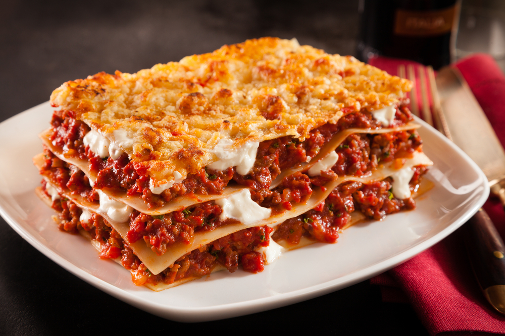

Lasagna Recept

Hozzávalók:
- 9-12 lasagna tészta lap
- 500g darált marhahús vagy pulykahús
- 1 nagyobb hagyma, apróra vágva
- 3-4 gerezd fokhagyma, apróra vágva
- 800g paradicsomszósz vagy darált paradicsom konzerv
- 2 evőkanál olívaolaj
- 2 teáskanál szárított bazsalikom
- 2 teáskanál szárított oregánó
- Só és frissen őrölt fekete bors ízlés szerint
- 500g ricotta sajt
- 1 nagy tojás
- 200g reszelt mozzarella sajt
- 100g reszelt parmezán sajt
Elkészítés:
- Előmelegítjük a sütőt 180 fokra.
-
Egy nagy serpenyőben melegítsünk olívaolajat közepes lángon. Adjuk hozzá
a hagymát és a fokhagymát, majd pirítsuk őket pár percig, amíg
megpuhulnak és enyhén aranybarnák lesznek.
-
Adjuk hozzá a darált húst a serpenyőhöz, majd süssük addig, amíg
teljesen meg nem pirul.
-
Öntsük hozzá a paradicsomszószt vagy a darált paradicsomot a serpenyőbe,
majd adjuk hozzá a bazsalikomot, oregánót, sót és borsot. Keverjük
össze, majd hagyjuk forrni. Csökkentsük a hőt, és főzzük további 10-15
percig, hogy az ízek összeérjenek.
-
Közben egy másik tálban keverjük össze a ricotta sajtot és a tojást.
-
Egy nagy tepsit vagy sütőedényt kenjünk ki kevés olajjal. Helyezzünk el
egy réteg lasagna tésztát az alján.
-
Kanalazzunk rá egy réteg a húsos szószból, majd terítsük el egy részét a
ricotta sajtból is. Szórjuk meg egy kevés mozzarella és parmezán
sajttal.
-
Ismételjük meg ezt a rétegzést, amíg a hozzávalók el nem fogynak, az
utolsó réteg legyen a sajtokból.
-
Takarjuk le a tepsit alufóliával, majd tegyük be a sütőbe és süssük
25-30 percig.
-
Vegyük le az alufóliát, majd süssük további 10-15 percig, vagy amíg a
sajt a tetején szép aranybarna nem lesz.
-
Miután elkészült, hagyjuk pihenni 5-10 percig, majd szeleteljük fel és
tálaljuk.
Mennyé visszafele